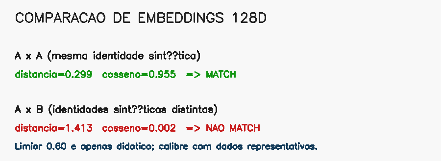

13. Reconhecimento facial e embeddings¶
O que você aprenderá¶
Neste capítulo, você aprenderá a separar três problemas que frequentemente são confundidos: detectar um rosto, representar um rosto e comparar identidades. O foco será embeddings, métricas e limiares, com exemplos sintéticos que permitem estudar a matemática sem utilizar dados biométricos reais.
Ao final, deverá conseguir:
- diferenciar detecção e reconhecimento facial;
- compreender alinhamento e normalização;
- explicar o conceito de embedding;
- compreender um espaço de características;
- normalizar vetores com norma L2;
- calcular distância Euclidiana;
- calcular similaridade de cosseno;
- distinguir verificação 1:1 de identificação 1:N;
- compreender o papel de limiares;
- interpretar pares genuínos e impostores;
- calcular FAR e FRR em um experimento didático;
- compreender curvas ROC/DET em alto nível;
- reconhecer a necessidade de calibração específica do domínio;
- discutir qualidade de captura e uso responsável.
Redes de reconhecimento facial modernas aprendem embeddings em que amostras da mesma identidade tendem a ocupar regiões próximas, enquanto identidades diferentes tendem a ficar separadas. FaceNet é um exemplo clássico dessa formulação métrica (SCHROFF; KALENICHENKO; PHILBIN, 2015).
13.1 Detectar não é reconhecer¶
Detecção¶
Pergunta:
“Onde existe um rosto?”
Saída típica:
Reconhecimento¶
Pergunta:
“Este rosto é suficientemente semelhante a uma referência?”
Uma caixa não contém identidade. Ela apenas delimita uma região candidata.
13.2 Pipeline completo¶
imagem
↓
detecção do rosto
↓
controle de qualidade
↓
alinhamento
↓
normalização / pré-processamento
↓
rede de embeddings
↓
vetor numérico
↓
comparação
↓
regra de decisão
O erro em qualquer etapa pode afetar o resultado final.
13.3 Alinhamento¶
Dois recortes da mesma pessoa podem ter olhos e boca em posições diferentes por causa da pose.
Alinhamento tenta padronizar a geometria usando landmarks, como olhos e nariz.
Analogia: fotos para documento¶
Comparar duas fotografias fica mais fácil quando ambas possuem escala e orientação semelhantes.
13.4 O que é um embedding?¶
Um embedding é um vetor numérico, por exemplo:
com 128, 512 ou outra quantidade de dimensões, dependendo do modelo.
Ele não é “o nome da pessoa”. É uma representação aprendida para tornar comparações úteis.
Analogia: endereço numa biblioteca¶
Imagine uma biblioteca organizada de forma que livros semelhantes sejam colocados próximos. O embedding funciona como uma posição nesse espaço de características.
13.5 Embeddings sintéticos para aprender sem biometria¶
import numpy as np
rng = np.random.default_rng(42)
base = rng.normal(size=128)
amostra_mesma = base + rng.normal(scale=0.05, size=128)
amostra_outra = rng.normal(size=128)
Esse experimento não representa uma distribuição facial real. Ele serve apenas para estudar distância e decisão.
13.6 Normalização L2¶
def normalizar(v):
norma = np.linalg.norm(v)
if norma == 0:
raise ValueError("Vetor de norma zero")
return v / norma
Após normalização:
deve produzir aproximadamente 1.
13.7 Por que normalizar?¶
Sem normalização, magnitude e direção influenciam a comparação.
Ao colocar embeddings na esfera unitária, métricas como cosseno tornam-se mais diretamente comparáveis.
A normalização não corrige um modelo ruim nem um pré-processamento incorreto; apenas padroniza a representação.
13.8 Distância Euclidiana¶
Interpretação geral:
O significado quantitativo depende do modelo e da calibração.
13.9 Similaridade de cosseno¶
Para vetores normalizados:
13.10 Distância e similaridade não usam a mesma direção¶
Distância:
Similaridade de cosseno:
Confundir essa direção pode inverter completamente a decisão.
13.11 Verificação 1:1¶
Pergunta:
“Esta amostra pertence à identidade declarada?”
Exemplo:
13.12 Identificação 1:N¶
Pergunta:
“Entre N referências, qual é a mais semelhante a esta amostra?”
distancias = [
np.linalg.norm(consulta - referencia)
for referencia in base
]
indice = int(np.argmin(distancias))
Quanto maior a base, maior a importância de validação cuidadosa do limiar e do contexto de uso.
13.13 Busca do vizinho mais próximo não significa reconhecimento automático¶
O vizinho mais próximo sempre existe, mesmo quando a pessoa consultada não está na base.
Por isso, identificação aberta exige também um limiar:
Analogia: concurso do “menos diferente”¶
Se nenhuma alternativa é boa, a menos ruim ainda será a melhor numericamente. Isso não significa que seja correta.
13.14 O limiar é uma decisão operacional¶
Para distância:
Um limiar mais permissivo pode aceitar mais pares genuínos, mas também mais impostores.
Um limiar mais rígido reduz falsos aceites, mas pode rejeitar usuários genuínos.
13.15 Pares genuínos e impostores¶
Genuíno¶
Duas amostras da mesma identidade.
Impostor¶
Amostras de identidades diferentes.
Para calibrar um sistema, medimos distribuições de escores desses dois grupos.
13.16 Experimento sintético¶
rng = np.random.default_rng(0)
scores_genuinos = rng.normal(
loc=0.55,
scale=0.08,
size=1000
)
scores_impostores = rng.normal(
loc=1.05,
scale=0.12,
size=1000
)
Esses números são didáticos e não correspondem a um modelo real.
13.17 FAR¶
FAR — False Acceptance Rate — mede a fração de comparações impostoras aceitas.
Para uma métrica de distância:
13.18 FRR¶
FRR — False Rejection Rate — mede a fração de comparações genuínas rejeitadas.
Compromisso¶
Reduzir FAR geralmente exige tornar o limiar mais rígido, o que pode aumentar FRR.
13.19 Tabela de limiares¶
for limiar in np.linspace(0.4, 1.2, 9):
far = np.mean(scores_impostores <= limiar)
frr = np.mean(scores_genuinos > limiar)
print(limiar, far, frr)
Essa tabela torna visível o compromisso entre os dois tipos de erro.
13.20 ROC e DET¶
Ao variar o limiar, obtemos diferentes pontos de operação.
Curvas ROC/DET ajudam a visualizar esse comportamento.
Não existe “melhor limiar” universal. A escolha depende do custo de erros e da população de uso.
13.21 Qualidade da imagem¶
Embeddings podem degradar com:
- desfoque;
- baixa resolução;
- pose extrema;
- oclusão;
- iluminação ruim;
- compressão;
- rosto muito pequeno.
Um sistema robusto deve considerar qualidade antes da comparação.
13.22 Uma única foto de referência pode ser insuficiente¶
Variações naturais de aparência podem fazer a mesma pessoa ocupar uma pequena região no espaço de embeddings, e não um ponto exato.
Possíveis estratégias:
- múltiplas referências;
- média de embeddings normalizados;
- seleção por qualidade;
- atualização controlada.
Essas estratégias exigem validação e políticas de dados adequadas.
13.23 Calibração não pode ser copiada cegamente¶
Um limiar depende de:
- arquitetura;
- versão dos pesos;
- alinhamento;
- normalização;
- câmera;
- população;
- qualidade das imagens;
- cenário 1:1 ou 1:N.
Por isso, um valor encontrado em outro projeto não deve ser assumido como adequado.
13.24 Uso responsável¶
Reconhecimento facial envolve informações biométricas e pode gerar consequências relevantes para pessoas. Projetos reais devem considerar, entre outros aspectos:
- necessidade e finalidade;
- minimização de dados;
- segurança;
- retenção;
- transparência;
- controle de acesso;
- revisão de erros;
- avaliação de desempenho em diferentes condições e grupos;
- requisitos institucionais e jurídicos aplicáveis.
No contexto didático deste repositório, os exemplos de comparação usam vetores sintéticos sempre que possível.
13.25 Exemplo integrado do capítulo¶
O código do capítulo 13 estuda decisões usando embeddings sintéticos.
Pipeline:
vetor-base sintético
↓
amostra próxima
↓
amostra independente
↓
normalização L2
↓
distância Euclidiana
↓
cosseno
↓
limiar didático
↓
distribuições genuíno/impostor
↓
FAR e FRR

13.26 Erros comuns¶
| Sintoma | Causa provável | Correção |
|---|---|---|
| “detector reconheceu pessoa” | tarefas confundidas | separar detecção/embedding/comparação |
| distâncias inconsistentes | normalização diferente | padronizar pipeline |
| decisão invertida | distância e similaridade confundidas | confira direção da métrica |
| sempre encontra alguém em 1:N | ausência de limiar | permita classe “desconhecido” |
| limiar funciona só no laboratório | calibração não representativa | validar no domínio real |
| piora com blur/pose | qualidade de captura | controle/avalie qualidade |
| métrica boa em média, ruim em subgrupo | avaliação agregada demais | estratifique condições |
13.27 Perguntas de revisão¶
- Qual diferença existe entre detecção e reconhecimento?
- O que é embedding?
- Para que serve normalização L2?
- Como interpretar distância Euclidiana?
- Como interpretar cosseno?
- Qual diferença existe entre 1:1 e 1:N?
- Por que o vizinho mais próximo pode ser uma pessoa errada?
- O que é FAR?
- O que é FRR?
- Por que um limiar precisa ser calibrado no domínio?
Exercícios de fixação¶
Exercício 1¶
Gere dois vetores aleatórios de 128 dimensões e normalize-os.
Exercício 2¶
Verifique numericamente que a norma dos vetores normalizados é aproximadamente 1.
Exercício 3¶
Calcule distância Euclidiana e cosseno entre dois vetores idênticos.
Exercício 4¶
Adicione ruído crescente a um vetor-base e registre a distância.
Exercício 5¶
Crie uma base sintética de 100 embeddings e encontre o vizinho mais próximo de uma consulta.
Exercício 6¶
Crie uma consulta que não deriva de nenhuma referência e mostre que ainda existe um “melhor” vizinho.
Exercício 7¶
Adicione um limiar para produzir resultado “desconhecido”.
Exercício 8¶
Gere 1.000 pares sintéticos genuínos e impostores.
Exercício 9¶
Calcule FAR e FRR para pelo menos dez limiares.
Exercício 10¶
Escolha dois pontos de operação: um priorizando redução de falso aceite e outro redução de falsa rejeição. Explique o compromisso.
Exercício 11¶
Compare verificação 1:1 e identificação 1:N em termos de decisão.
Exercício 12¶
Crie um checklist de qualidade de captura antes de gerar um embedding.
Exercício 13¶
Escreva uma análise crítica sobre por que acurácia média isolada é insuficiente para avaliar um sistema de reconhecimento facial.
Síntese¶
Reconhecimento facial moderno pode ser entendido como um problema de representação métrica: uma rede transforma rostos em vetores e uma regra compara distâncias ou similaridades. O resultado confiável depende tanto do embedding quanto de alinhamento, qualidade, calibração e contexto de decisão. O objetivo didático é compreender a matemática sem transformar escores em certezas que o modelo não oferece.
Referências¶
SCHROFF, Florian; KALENICHENKO, Dmitry; PHILBIN, James. FaceNet: a unified embedding for face recognition and clustering. In: IEEE Conference on Computer Vision and Pattern Recognition. 2015.
SZELISKI, Richard. Computer Vision: Algorithms and Applications. 2. ed. Cham: Springer, 2022.